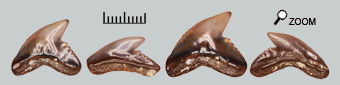
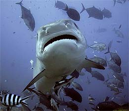
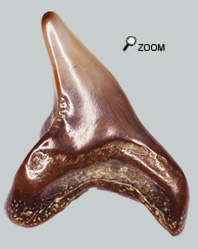

|
Un tueur en devenir...

 Les dents trouvées sont faciles à reconnaître. Elles sont un compromis entre les dents d’Hexanchus et d’Hémipristis.
La dent est inclinée et présente une encoche profonde sur le côté. Le talon de la dent est garni de quelques denticules. Les dents supérieures et inférieures ont une forme comparable et leur taille diminue vers le fond de la bouche.
Il existe encore des Galeocerdos mais ces petits requins des faluns sont devenus de gros prédateurs redoutés. Les dents ont-elles aussi évolué vers une augmentation du nombre de denticules.
Requins tigres : la mauvaise réputation
 Ils sont appelés requins tigres à cause de bandes sombres observables sur les jeunes individus.
Habitat :
C’est un requin qui se rencontre pratiquement dans toutes les mers tempérées et tropicales. Il semble avoir une prédilection pour les eaux troubles, ce qui devait être le cas de la mer des faluns à l’embouchure des fleuves.
C’est plutôt un requin côtier qui se retire dans les profondeurs la journée et devient actif la nuit.
Caractéristiques :
Longueur : Certains individus atteignent 7 m mais la majorité des requins ne dépasse pas 5 m de long.
Alimentation: Sans doute le moins spécialisé des requins : il bouffe tout ! C'est la hyène des mers. Et aussi le plus dangereux avec le grand blanc. Il attaque et dévore l'homme régulièrement. Il est considéré comme le plus dangereux de tous les requins parce qu’il «goûte» tout ce qui se présente.
Ecologie : En maraude, il nage lentement, jusqu'à rencontrer une proie. Il devient alors très actif et est capable d'accélérations violentes.
Astucieux: comment trouver Physogaleus?
Longtemps l’existence de physogaleus contortus a fait l’objet de débats et on l’a confondu avec Galerocerdo aduncus à cause d’une ressemblance saisissante entre les dents des 2 taxons. On a souvent cru que les dents de physogaleus n’étaient rien d’autre que des dents atypiques de Galeocerdo (dents symphysaires).
Astucieux. Pour parvenir à discriminer les 2 espèces, il a été réalisé une étude statistique sur plusieurs sites. Si les 2 morphotypes se retrouvent dans les mêmes proportions universellement, il s’agit d’une seule espèce. Si les pourcentages respectifs des 2 morphotypes varient en fonction du lieu, c’est que 2 populations d’espèces différentes se sont côtoyées. C’est ainsi qu’il a été possible d’affirmer que P. contortus était un requin différent de G aduncus.
Chez Pysogaleus contortus, la couronne se tord légèrement vers la pointe. Mais ce seul critère est insuffisant pour discriminer les 2 espèces. Les dents de Physogaleus ont une serration moins accentuée et sont moins ramassées que celles de Galeocerdo.
|